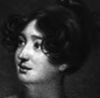

Alison Booth
Fyvie, John. Comedy Queens of the Georgian Era. London: Constable, 1906. New York: Dutton, 1907.
Fyvie also wrote Noble Dames and Notable Men of the Georgian Era (London: Constable, 1910). Its subjects include Lady Mary Coke, the Countess of Strathmore, and Elizabeth, Lady Holland.
TOC: Lavinia Fenton; Charlotte Charke; Catherine Clive; Margaret Woffington; George Anne Bellamy; Frances Abington; Sophia Baddeley; Elizabeth Farren; Mary Robinson; Mary Sumbel; Dora Jordan; Harriot Mellon.
Chapter titles: Lavinia Fenton, Duchess of Bolton (1708-1760); Charlotte Charke (1710-1760); Catherine Clive (1711-1785); Margaret Woffington (1720-1760); George Anne Bellamy (1731-1788); Frances Abington (1737-1815); Sophia Baddeley (1742-1780); Elizabeth Farren, Countess of Derby (1759?-1829); Mary Robinson, ‘Perdita’ (1758-1800); Mary Sumbel, ‘Becky’ Wells (1759-1826?); Dora Jordan (1762-1816); Harriot Mellon, Duchess of St. Albans (1777?-1837).
Author of Some Literary Eccentrics (New York : J. Pott, 1906); Noble Dames and Notable Men of the Georgian Era (London: Constable, 1910; New York: Lane, 1910); Wits, Beaux, and Beauties of the Georgian Era (London, New York: Lane, 1909).
-
Margaret Wiffington
-
 Frances Abington
Frances Abington -
 Sophia Baddeloy
Sophia Baddeloy -
Elizabeth Ferron
-
 Mary Lumbel
Mary Lumbel -
Dora Jordan
-
Harriot Mellon
Search OCLC WorldCat for this title.
Search Google Books for this title.